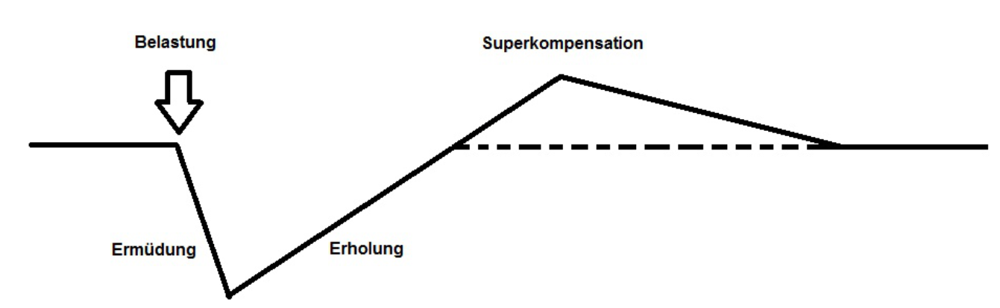
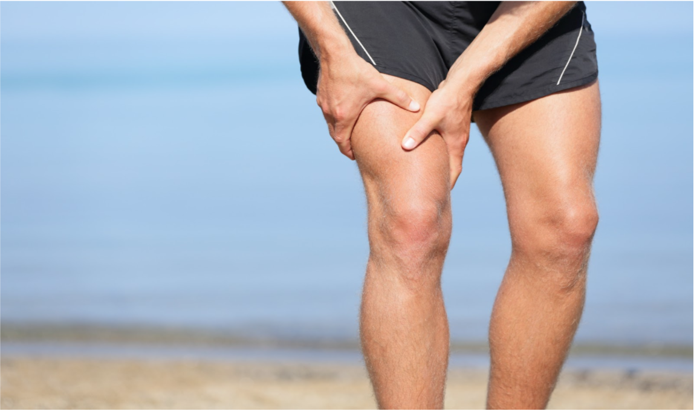

Herzlich Willkommen zum Gesünder leben WebBased Training
Gesünder leben WBT
Willkommen
Herzlich Willkommen!
- “Ich würde schon gerne ein bisschen was abnehmen und irgendwie allgemein fitter werden, aber ich weiß nicht, wie das gehen soll” (Ahmet E., Auszubildener, 20 Jahre).
- “Ich habe schon drei Diäten angefangen. Zehn Tage später bin ich dann immer wieder schwach geworden. Schokolade schmeckt einfach viel besser als Kohlrabi. Und immer, wenn ich mit der Diät aufgehört hatte, habe ich noch mehr als am Anfang der Diät gewogen. Es ist zum Verzweifeln. Was mache ich nur falsch?” (Ursula D., Sekretärin, 53 Jahre).
- “Ich weiß ja, dass Sport gut ist und so, aber ich kann mich einfach nicht dazu aufraffen. Ich bin zu faul. Und Sport ist so anstrengend. Aber ich würde schon gerne nackt besser aussehen” (Jan K., Student, 30 Jahre).
Start
du auch?
du auch?
Wenn du dieses Training vollständig bearbeitest, wirst du einiges lernen:
- In Kapitel 1 geht es um die Ernährung. Um das Thema Ernährung ranken sich zahlreiche Mythen. Wir haben die bekanntesten Ernährungsmythen für dich gesammelt und helfen dir dabei, sie zu widerlegen. Außerdem erhältst du Tipps und Anregungen, wie du deine Ernährung gesünder gestalten kannst.
- Das Thema in Kapitel 2 ist der Sport. Auch um das Thema Sport ranken sich zahlreiche Mythen, die wir auch für dich gesammelt haben. Außerdem wirst du Tipps erhalten, wie du dein Training gut gestalten kannst.
- In Kapitel 3 geht es dann um die Umsetzung dessen, was du in diesem Training gelernt hast. Du wirst eine praktische und einfache Methode (sogenannte SMART-Ziele) kennenlernen, mit der du dir Ziele setzen und sie erreichen kannst!
Kategorieauswahl
Kategorieauswahl
Ernährung
Einleitung
„Low Carb gefährlich? Schaden zuviel Fett und Eiweiß?“
„Viel Fett, wenig Kohlenhydrate – das greift die Speckdepots an“.
Kommen dir solche Überschriften bekannt vor?
Wer sich über das Thema „Gesunde Ernährung“ informieren will, verirrt sich schnell in einem nahezu unüberschaubaren „Kaninchenbau“ an widersprüchlichen Informationen und Empfehlungen.
In diesem Kapitel werden wir versuchen, etwas Ordnung in den „Kaninchenbau“ der Ernährung zu bringen. Du wirst dabei folgendes lernen:
- Du wirst populäre „Ernährungsmythen“ kennenlernen, die häufig genannt werden, wenn es um die Thema „Gesunde Ernährung“ geht.
- Du wirst lernen, was tatsächlich hinter diesen Mythen steckt.
- Du wirst zahlreiche Tipps und Anregungen erhalten, wie du deine Ernährung gesünder gestalten kannst.
Klicke weiter, um zur Kapitelübersicht zu gelangen.
Kapitelübersicht
Ernährung
Einleitung
Kapitel 1 - Ernährungsmythen - Das Quiz
Das Quiz besteht aus fünf Aussagen. Deine Aufgabe ist es, zu entscheiden, ob diese stimmen oder nicht. Klicke dazu auf die Buttons “Stimmt” oder “Stimmt nicht”. Danach erhältst du sofort eine Rückmeldung, ob du richtig gelegen hast oder nicht. Außerdem erhältst du weiterführende Informationen.
Teste Dein Wissen und starte mit dem Quiz!
Frage 1
Kapitel 1 - Ernährungsmythen - Frage 1
Antwort 1
Kapitel 1 - Ernährungsmythen - Antwort 1
Ein häufig genannter Ernährungstipp für Menschen, die abnehmen möchten, ist folgender: “Iss‘ keine Kohlenhydrate am Abend! Das macht nämlich dick, weil wir Menschen nachts schneller Fett aufbauen!”
was steckt dahinter?
Viele glauben, dass sich der Stoffwechsel im Schlaf sehr stark verlangsamt. Außerdem treiben Kohlenhydrate den Blutzucker- und Insulinspiegel in die Höhe. Bei einem langsamen Stoffwechsel kann das dazu führen, dass man Fettgewebe aufbaut. Deshalb nehmen viele an, dass Kohlenhydrate am abend dicker machen. Und weil dies für viele sehr plausibel klingt, setzt sich dieser Mythos immer wieder fort."
was ist es wirklich?
In Studien(1,2) konnte nachgewiesen werden, dass sich der Stoffwechsel nachts nur geringfügig - wenn überhaupt- verlangsamt. Stattdessen kann ein kohlenhydratreiches Abendessen vor dem Schlafengehen sogar dazu beitragen, dass übergewichtige Personen am nächsten Morgen weniger Hunger haben und schneller abnehmen, als Personen, die dieselbe Menge Kohlenhydrate über den ganzen Tag hinweg verteilt essen (3).
was heißt das für dich?
Auch du kannst Kohlenhydrate am Abend essen. Es sollten jedoch nicht zu viele sein. Die Teilnehmer an der Studie (3) nahmen 1.300 – 1.500 Kalorien pro Tag zu sich, 40-50 % davon waren Kohlenhydrate.2 Zhang K,, Sun M,, Werner P,, Kovera A,J, Albu J,, Pi-Sunyer F.X, & Boozer C.N. (2002). Sleeping metabolic rate in relation to body mass index and body composition. Int J Obes Relat Metab Disord ;26(3):376-83.
3 Sofer S, Eliraz A, Kaplan S, Voet H, Fink G, Kima T, & Madar Z. (2011) Greater weight loss and hormonal changes after 6 months diet with carbohydrates eaten mostly at dinner. Obesity, 19(10), 2006-2014.
Frage 2
Kapitel 1 - Ernährungsmythen - Frage 2
Antwort 2
Kapitel 1 - Ernährungsmythen - Antwort 2
„Fett macht fett“, diesen Satz hast du sicher schon oft gehört.
was steckt dahinter?
Fett enthält viele Kalorien. Und zu viele Kalorien machen bekanntlich dick. Außerdem ist Fett genau das, was viele Personen, die Fett verlieren wollen, um jeden Preis vermeiden möchten. Wenn ich Fett verlieren will, warum soll ich dann Fett essen? So denken viele. Du auch?
was ist es wirklich?
Eines vorweg: Fett ist überlebenswichtig. Wir brauchen es zum Beispiel, um bestimmte Vitamine aufzunehmen. Es gibt zwei Arten von Fett: „gutes“ und „schlechtes“. Beide unterscheiden sich durch einen bestimmten chemischen Baustein: Die sogenannte „Fettsäure“ (1). „Schlechtes“ Fett besteht unter anderem aus sogenannten „gesättigten Fettsäuren“, “gutes“ Fett aus sogenannten „ungesättigten Fettsäuren“. Gesättigte Fettsäuren befinden sich vor allem in tierischen Produkten, wie fettigem Fleisch, Sahne und Butter, aber auch in gehärteten Ölen, wie Palmöl. Ungesättigte Fettsäuren befinden sich hauptsächlich in flüssigen, pflanzlichen Ölen (z.B. Olivenöl), aber auch Nüssen (z.B. Walnüssen) und fettem Fisch (z.B. Lachs).
was heißt das für dich?
Fett ist nicht nur ein Geschmacksträger (sprich: lecker), sondern auch lebenswichtig. Du solltest also auch genügend Fett zu dir nehmen, vor allem in Form von ungesättigten Fettsäuren. Insbesondere die Menge ist entscheidend: Da Fett sehr viele Kalorien enthält und zu viele Kalorien dick machen, solltest du jedoch darauf achten, nicht allzu davon viel zu dir zu nehmen. Die Deutsche Gesellschaft für Ernährung (DGE) empfiehlt beispielsweise, dass Jugendliche und Erwachsene ihren Energiebedarf (Anzahl der notwendigen Kalorien pro Tag) zu 30 % mit Fett decken sollten (2).1 Biesalski, H.K, Grimm, P., & Nowitzki-Grimm, S. (2015). Taschenatlas Ernährung. 6. Auflage. Stuttgart: Georg Thieme Verlag.
2 https://www.dge.de/wissenschaft/referenzwerte/fett/
Frage 3
Kapitel 1 - Ernährungsmythen - Frage 3
Antwort 3
Kapitel 1 - Ernährungsmythen - Antwort 3
Kiloweise Spinat, Beeren, Äpfel, Bananen und ein paar Eiswürfel in den Mixer, alles schön cremig rühren und fertig ist dein Guten-Morgen-Smoothie, der perfekte Diät-Drink. Richtig? Falsch!
was steckt dahinter?
Es klingt vielversprechend: statt über den ganzen Tag hinweg die empfohlene Tagesdosis von fünf Portionen Obst und Gemüse essen zu müssen, wird einfach viel Obst und Gemüse in einen Mixer geworfen und zu einem Getränk verarbeitet. Man muss das noch nicht einmal selbst machen: in den Obst- und Gemüseabteilungen der Supermärkte stehen mittlerweile auch Kühlschränke, in denen industriell gefertigte Smoothies angeboten werden. Das scheint ideal zu sein für gestresste Büroarbeiter, die schlichtweg keine Zeit haben, fünf Portionen Obst und Gemüse in ihren Mixer zu werfen, geschweige denn sie über den Tag hinweg verteilt zu essen.
was ist es wirklich?
Wenn du es bei einem selbstgemachten Smoothie pro Tag belässt, hast du nicht allzu viel zu befürchten. Du solltest jedoch darauf achten, die Früchte möglichst vollständig in den Mixer zu werfen, also beispielsweise Äpfel nicht zu schälen, weil sich die meisten Vitamine unterhalb der Schale befinden. Je mehr Obst du in deinen Smoothie machst, desto mehr Kalorien wirst du auch in flüssiger Form zu dir nehmen. Wenn dein Smoothie beispielsweise hauptsächlich aus Weintrauben und Bananen besteht, dann wird er sehr kalorienreich sein, weil diese Früchte von Natur aus viel Fruchtzucker enthalten. Diese Kalorien (auch wenn du sie in flüssiger Form zu dir genommen hast) gehen in deine tägliche Kalorienbilanz ein. Wenn du also deinen Smoothie trinken willst, solltest du im Auge behalten, wie viele Kalorien du sonst im Laufe des Tages zu dir nimmst. Insbesondere Smoothies aus dem Supermarkt solltest du mit Vorsicht genießen. Diese enthalten nämlich neben Obst und Gemüse auch häufig zugesetzten Zucker und Fruchtsaft, um den Smoothie süßer und „smoother“ zu machen. Auf diese Weise wird der vermeintlich gesunde Diät-Drink dann zu einer Kalorienbombe.
was heißt das für dich?
Versuch’ lieber, über den Tag hinweg verteilt kleinere Portionen Obst und Gemüse zu essen (z.B. ein Apfel zum Frühstück, Paprikastreifen, Gurken- und Möhrenscheiben als Snacks zwischendurch, ein Schälchen voll Brokoli zum Mittagessen in der Kantine und ein Salat zum Abendessen). Auf diese Weise bleibt dein Magen länger gefüllt und du fühlst dich länger satt. Das ist nämlich ein weiterer Nachteil von Smoothies: Flüssigkeiten haben nur einen geringen Sättigungseffekt. Feste Nahrung jedoch hält dich länger satt.Frage 4
Kapitel 1 - Ernährungsmythen - Frage 4
Antwort 4
Kapitel 1 - Ernährungsmythen - Antwort 4
Kein Fleisch, kein Fisch und auch weder Milch noch Eier. Viele denken: “Da kann man ja vor lauter Mangelerscheinungen nur krank werden”. Doch stimmt das?
was steckt dahinter?
Zunehmend mehr Menschen halten mittlerweile eine vegetarische Ernährung (also ein ausschließlicher Verzicht auf Fisch und Fleisch, nicht aber auf andere tierische Produkte) für gesund. Sie sind aber der Meinung, dass ein Verzicht auf alle tierischen Nahrungsprodukt ungesund, sogar schädlich und tödlich sei. Das liegt daran, dass viele lebenswichtige Nährstoffe (z.B. Eiweiß, Vitamin B12, Eisen, Kalzium und Jod hauptsächlich in tierischen Lebensmitteln vorkommen. Eine vegane Ernährung kann also dazu führen, dass der Körper mit diesen Nährstoffen nicht ausreichend versorgt wird. Das lässt sich jedoch verhindern, wenn du diese Nährstoffe über Nahrungsergänzungsmittel zuführst. Vor allem schwangere und stillende Frauen, aber auch Kinder sollten aber besonders vorsichtig sein: diese haben nämlich einen erhöhten Bedarf an diesen Nährstoffen.
was heißt das für dich?
Wenn du dich aus ethischen Gründen für eine vegane Ernährung entscheidest solltest du gut darauf achten, dass du auch genug Nährstoffe zu dir nimmst. Einige (vor allem Vitamin B 12) musst du in Form von Nahrungsergänzungsmitteln zu dir nehmen. Andere (z.B. Eisen) kannst du ausreichend zu dir nehmen, wenn du Hülsenfrüchte (z.B. Linsen) isst.Frage 5
Kapitel 1 - Ernährungsmythen - Frage 5
Antwort 5
Kapitel 1 - Ernährungsmythen - Antwort 5
“Iss’ morgens wie ein Kaiser, mittags wie ein König und abends wie ein Bettler”. Vielleicht hast auch du als Kind diesen oder einen ähnlichen Spruch von deinen Eltern oft gehört. Viele Personen sind der Auffassung, dass das Frühstück die wichtigste Mahlzeit des Tages sei. Doch stimmt das? Nein. Keine Mahlzeit ist grundsätzlich “wichtiger” als eine andere.
was steckt dahinter?
Hinter diesem Mythos steck die Annahme, dass Frühstück wichtig ist, um den Stoffwechsel zu bescheunigen. Ein schneller Stoffwechsel schützt nämlich davor, dick zu werden. Ein langsamer hingegen führt dazu, dass wir schneller dick werden. Deshalb, so manche Leute, ist es wichtig, auf jeden Fall zu frühstücken. Außerdem leeren sich während wir schlafen unsere Nahrungsreserven. Wenn wir dann nicht sofort nach dem Aufstehen frühstücken, bleiben diese Reserven ungefüllt und wir werden früher oder später Heißhunger kriegen und zu viel auf einmal essen.
was ist es wirklich?
Bislang konnte nicht belegt werden, ob ein Verzicht auf’s Frühstück den Stoffwechsel beschleunigt. Stattdessen ist es gesamte Menge an Essen entscheidend, die du über den ganzen Hinweg zu dir nimmst. Und es scheint keinen Unterschied zu machen, wie oft und wann du isst (1).
was heißt das für dich?
Du wirst nicht sterben, wenn du nicht frühstückst. Du wirst auch nicht dicker. Du kannst also ruhig das Frühstück ausfallen lassen. Am Ende des Tages zählt, wie viel du gegessen hast und nicht wann.1 Kobayashi, F., Ogata, H., Omi, N., Nagasaka, S., Yamaguchi, S., Hibi, M., & Tokuyama, K. (2014). Effect of breakfast skipping on diurnal variation of energy metabolism and blood glucose. Obesity research & clinical practice, 8(3), e249-e257.
Tipps
Kapitel 1 - Ernährungsmythen - Tipps und Tricks
Sport
Einleitung
„Ohne Schweiß kein Preis."
„Salat schrumpft den Bizeps.“
Kommen dir solche Aussagen bekannt vor?
Wenn es um das Thema „Sport“ geht, meint anscheinend jeder Sportler ein Experte zu sein. Doch redet man mit unterschiedlichen Leuten, wird schnell klar, dass anscheinend jeder eine andere “subjektive” Meinung hat. Allerdings können solche Widersprüche schnell zu chronischen Verletzungen und damit zum Ende der Sportkarriere führen. Unwissenheit kann also schnell dramatische Folgen haben. Deshalb ist es das Ziel dieser Einheit “Licht ins Dunkel” zu bringen. Du wirst dabei folgendes lernen:
- Du wirst die Vorteile von Sport kennenlernen.
- Du wirst erfahren, welche Sportart für Dich geeignet ist.
- Du wirst zahlreiche Tipps und Anregungen erhalten, wie Du Dein Training erfolgreich gestalten kannst.
Klicke weiter, um zur Kapitelübersicht zu gelangen.
Kapitelübersicht
Sport
Kapitel 1 - Sportmythen - Das Quiz
Das Quiz besteht aus fünf Aussagen. Deine Aufgabe ist es, zu entscheiden, ob diese stimmen oder nicht. Danach erhältst du sofort eine Rückmeldung, ob du richtig gelegen hast oder nicht. Außerdem erhältst du weiterführende Informationen.
Teste Dein Wissen und starte mit dem Quiz!
Frage 1
Kapitel 1 - Sportmythen - Frage 1
Frage 2
Kapitel 1 - Sportmythen - Frage 2
Frage 3
Kapitel 1 - Sportmythen - Frage 3
Frage 4
Kapitel 1 - Sportmythen - Frage 4
Frage 5
Kapitel 1 - Sportmythen - Frage 5
Sport
1
Kapitel 2 - Basiswissen
Falls Du Dir nun denkst “das klingt ja ganz schön und gut, aber ich habe eigentlich keine Zeit” oder “eigentlich wollte ich ja, aber…”, dann sollte Dich Folgendes beruhigen: bereits 20 Minuten moderate sportliche Aktivität reichen, um von den Vorteilen des Sports zu profitieren - vorausgesetzt man treibt regelmäßig Sport. Daher solltest Du auch schleunigst das Killerwort des Sports “eigentlich” aus Deinem Freizeit-Wortschatz verbannen.
Jetzt wo Du weißt, dass Sport selbst bei geringem Zeitbudget sinnvoll ist, ist es im Prinzip “fast” schon egal für welche Sportart Du Dich entscheidest, denn Du triffst damit im jeden Fall immer eine gute Wahl! Welche Sportart zu Dir passt, hängt lediglich von Deinen Vorlieben und Zielen ab. Jedoch solltest Du Dir bei Körperlichen Beschwerden oder Beeinträchtigungen (z.B. auch bei starkem Übergewicht) dringend den Rat eines Arztes oder Experten einholen: Gegenebenfalls könnte gewichtsbelastende Sportarten, wie Jogging, nicht infrage kommen.
2
Kapitel 2 - Basiswissen
Du möchtest gerne länger als nur zehn Minuten Laufen, Radfahren oder Schwimmen können, ohne dabei nach Sauerstoff zu lechzen? Oder möchtest Du einfach nur was für Deine Gesundheit tun und nicht an eine „Muckibude“ gebunden sein? Oder willst Du einfach nur paar Funde purzeln lassen? Dann ist Ausdauersport [Hyperlink] genau das richtige für Dich.
Das tollte an Ausdauersport ist, dass man durch diesen nicht nur fitter und vitaler wird, sondern ganz nebenbei resultiert eine erhebliche Verbesserung des Fettstoffwechsel (siehe auch Kapitel Abnehmen [Hyperlink]) wie auch eine Verkürzung der Regenerationszeit gleichermaßen (siehe auch Kapitel Regeneration [Hyperlink]). Aber auch der Kraftsport trägt nicht nur alleine zur Fitness und gesteigerten Vitalität bei, sondern kann unter anderem auch eine solide Ausdauerleistung optimieren.
Ebenfalls solltest Du noch unbedingt Wissen, dass egal für welche Sportart Du Dich letztendlich entscheidest, eine richtige Ernährung unabdingbar für langfristige erfolge ist. Denn mit einer falschen Ernährung kannst Du sogar Deine Gesundheit verschlechtern. Im Kapitel Sport und Ernährung [Hyperlink] lernst Du die wichtigsten Ernährungprinzipien kennen.
Du solltest außerdem wissen, dass Sport schnell zu Verletzungen kann. Nicht ohne Grund heißt es so schön, dass Sport “Mord” ist. Deswegen erfährst Du im Kapitel Dehnen [Hyperlink] weshalb und wann Dehnübungen sinnvoll sind, um sowohl das Verletzungrisiko zu minimieren als auch den Körper geschmeidig zu halten.
3
Kapitel 2 - Basiswissen
Muskelaufbau
 Die Idee hinter erfolgreichem Training ist also, diesen letzten Schritt zu verhindern, indem man rechtzeitig erneut trainiert. Der Trick hierbei besteht darin, zeitlich möglichst den höchsten Punkt der Superkompensation zu treffen und nicht etwa zu trainieren, während sich die Muskeln noch erholen und geschwächt sind. Was bedeutet das jetzt genau für dich und dein Training? Manchmal ist weniger mehr! Wenn du so viel trainierst, dass deine Muskeln keine Möglichkeit zur Erholung haben, behinderst du deinen eigenen Trainingserfolg. Du solltest also Ruhetage einplanen, wenn du dir einen Trainingsplan erstellen möchtest. Wenn du dann etwas fitter bist und so großen Gefallen am Sport findest, sodass dir ein Tag ohne Training langweilig erscheint, könntest du dieses Wissen erneut anwenden. So könntest du beispielsweise an geraden Kalendertagen den Oberkörper und an ungeraden Kalendertagen die Beine trainieren und die jeweils andere Muskelgruppe schonen.
Weineck, J. (2009). Optimales Training. Leistungsphysiologische Trainingslehre unter besonderer Berücksichtigung des Kinder- und Jugendtrainings (16. Aufl.). Balingen: Spitta Verlag.
Kapitel 2 - Basiswissen
Muskelkater
 Muskelkater tritt etwa sechs bis acht Stunden nach einem intensiven oder ungewohnten Training auf und erreicht seinen Höhepunkt etwa nach 48 Stunden. Da das Auftreten von Muskelkater von der Art des Trainings, der Genetik, sowie der Ernährung abhängt, handelt es sich bei diesen Zeitangaben lediglich um grobe Schätzungen. Aber was ist Muskelkater überhaupt? Und was haben Kater damit zu tun? Letztere Frage lässt sich schnell beantworten: Der Muskelkater verdankt seinen Namen nämlich nicht dem sympathischen Pelzträger, stattdessen beruht die Benennung wahrscheinlich auf der Eindeutschung des Wortes Katarrh ("Entzündung"). Die erste Frage ist in der Vergangenheit immer wieder Gegenstand wissenschaftlicher Debatten gewesen, mittlerweile gehen jedoch viele Sportwissenschaftler und -mediziner davon aus, dass durch die Überbelastung des Muskels feinste Risse im Muskelgewebe entstehen und Entzündungen verursacht werden. Die Entzündungsstoffe verursachen erst zeitlich versetzt Schmerzen, da die Muskelfasern selbst nicht über zur Schwerzweiterleitung notwendige Nerven verfügen. Der Körper spült nach einiger Zeit jedoch die Entzündungsstoffe aus, sodass sie in umliegendes Gewebe gelangen und dann Schmerzen verursachen. Viele trösten sich im Falle von Muskelkater-Schmerzen mit der Aussage, dass Muskelkater immerhin das Muskelwachstum anfache. Leider fand man heraus, dass der Muskelaufbau weitgehend unabhängig von der Auftretenshäufigkeit von Muskelkater ist. Eine Frage, die durch diesen Befund für Betroffene noch quälender wird, ist, wie man den Muskelkater denn wenigstens lindern kann. Hierbei können leichte Massagen hilfreich sein (Hilbert, Sforzo & Swensen, 2003). Auch eine gute Aufwärmeinheit vor der eigentlichen sportlichen Belastung verringert die Intensität des Muskelkaters (Law & Herbert, 2007). Ein Cool-down jedoch steht nicht mit vermindertem Muskelkater in Zusammenhang.
-Schoenfeld, B.J., Contreras, B. Is Postexercise Muscle Soreness a Valid Indicator of Muscular Adaptations? Strength & Conditioning Journal 2013, 35, 5.
-Wilmore, J.H., Costill, D.L., Kenney, W.L. (2008). Adaptations to Resistance Training. Physiology of Sport and Exercise Fourth Edition. USA Human Kinetics.
http://www.aerzteblatt.de/archiv/30395
Hilbert, J.E., Sforzo, G.A., Swensen, T. (2003). The effects of massage on delayed onset muscle soreness. British Journalof Sports Medicine, 37(1), 72-78.
Law, R.Y.W., Herbert, R.D. (2007). Warm-up reduces delayed-onset muscle soreness but cool-down does not: a randomised controlled trial. Australian Journal of Physiotherapy, 53, 91-95.
Bild:
http://www.saeure-basen-ratgeber.de/wp-content/uploads/2015/01/Fotolia_53248636_%C2%A9-Maridav-Fotolia.com_.jpg, Abrufdatum: 25.06.2016, 14:40
Sport
Kapitel 3 - Krafttraining
-
Schnellkrafttraining
Hierbei soll die Schnellkraft der betreffenden Muskeln erhöht werden. Die Übungen werden explosiv und hochfrequent durchgeführt. Zwischen den Übungssätzen werden Pausen zur Erholung genutzt. -
Maximalkrafttraining
Ziel ist die Erhöhung der Maximalkraft. Die Belastung (also z.B. das Gewicht) ist hierbei hoch, die Anzahl der Wiederholungen jedoch nur gering. Auch hier werden zwischen den Übungssätzen Pausen eingeplant, die der Erholung dienen sollen. -
Kraftausdauertraining
Um die Kraftausdauer zu erhöhen werden die Übungen oft (>20 Übungen pro Serie) bzw. relativ lange (30-60 Sekunden) durchgeführt. Die Intensität der Übung ist jedoch gering (die Gewichte sind beispielsweise relativ leicht). Die Pausen sind nur kurz und unvollständig, um die Beanspruchung aufrecht zu erhalten. Außerdem werden mindestens zwei bis drei Serien absolviert.
Möchte man Krafttraining mit Geräten betreiben, so ist der Begriff "Maximalkraft" zentral. Darunter versteht man die Belastung (also zum Beispiel das Gewicht auf den Hanteln) bei der man die Übung genau einmal ausführen kann. Oft wird man dir empfehlen eine Übung bei einem bestimmten Prozentanteil deiner Maximalkraft durchzuführen. In der folgenden Tabelle kannst du sehen, welche Intensität generell bei welchen Trainingsmethoden empfohlen wird:
Auch wenn sich das Training mit Geräten großer Beliebtheit erfreut, kann man ruhigen Gewissens auch auf "altmodische" Eigengewichtstrainings zurückgreifen. Training mit Eigengewicht hat einige Vorteile: So musst du kein Geld dafür ausgeben, denn alles, was du für dein Training brauchst (also deinen Körper) hast du ja bereits! Auch ist diese Art des Trainings einsteigerfreundlicher: Viele Geräte in Fitnessstudios sorgen dafür, dass bestimmte Muskeln sehr isoliert trainiert werden. Wenn man erfahren ist, und man weiß, was man beachten muss, ist das auchkein Problem. Als Einsteiger läuft man jedoch Gefahr, bestimte Muskeln einfach außen vor zu lassen. Eigengewichtsübungen hingegen beanspruchen grundsätzlich immer mehrere Muskeln gleichzeitig. Um den ganzen Körper zu trainieren, ist ein kleines Übungsrepertoire vollkommen ausreichend. Als Einsteiger solltest du dich auf jeden Fall also einmal mit Eigengewichtstraining auseinandersetzen! Gute Übungen sind zum Beispiel Liegestütz, Klimmzüge, Sit-ups, Rumpfheben und Kniebeuge. Generell solltest du darauf achten, auch die Gegenspieler des beanspruchten Muskels zu trainieren.
http://www.spiegel.de/gesundheit/ernaehrung/muskeltraining-die-bedeutung-der-ernaehrung-fuer-die-fitness-a-926821.html
http://www.wiener-sport.at/fitnesscenter-wien/krafttraining
Boeck-Behrens, W.-U. & Buskies, W. (2009). Fitness-Krafttraining. Die besten Übungen und Methoden für Sport und Gesundheit. Hamburg: Rowohlt.
Kapitel 3 - Krafttraining
Methode 1: Trainiere so hart wie nur möglich und miss dabei deinen Puls.
Hierzu nutzt man in der Regel Pulsuhren oder ähnliches. Auch wenn diese Methode recht genau ist, ist sie für Einsteiger (insbesondere ohne professionelle Betreuung) nur bedingt empfehlenswert. Einsteiger tendieren nämlich zum Beispiel dazu, sich selbst zu unterschätzen und zu früh aufzugeben. Sie erreichen ihren tatsächlichen Maximalpuls oft also gar nicht! Es gibt auch andere Methoden, wie zum Beispiel...Methode 2: Maximalpuls = 220 - Alter
Dieser Weg, deinen Maximalpuls zu bestimmen, ist sicherlich der bequemste. Er ist auch der ungenaueste! Bisweilen weicht der errechnete Maximalpuls stark vom tatsächlichen Maximalpuls ab.Bei den beiden vorgestellten Methoden gibt es einen wesentlichen Punkt zu beachten: Der Maximalpuls ist kein zeitlich stabiler Wert. Wenn du fitter wirst, wird sich dein Maximalpuls auch verändern. Außerdem ist es möglich, dass je nach Art des Trainings ein anderer Maximalwert erzielt werden kann. Es macht also Sinn, den Maximalpuls in regelmäßigen Abständen erneut zu erheben. Sollten dir diese Methoden für den Einstieg nicht zusagen gibt es auch andere Methoden, um die Trainingsbelastung zu bestimmen, ohne den Maximalpuls kennen zu müssen:
Methode 3: "Sprech-Test"
Die Idee hinter dem Sprech-Test ist denkbar simpel: Wer noch genug Puste zum Quatschen hat, trainiert nicht hart genug! Die Belastung einer Person, die pro Atemzug drei bis fünf Wörter sprechen kann, ist "moderat" oder niedriger. Wenn man Probleme hat, zwei bis drei Wörter herauszupressen, ist die Trainingsbelastung offensichtlich "hoch". Das Praktische bei dieser Methode ist, dass diese Faustregeln unabhängig vom individuellen Fitnesslevel anwendbar sind. Leider sind sie, insbesondere im Vergleich zur Maximalpulsbestimmung mithilfe einer Pulsuhr, eher ungenau.Methode 4: Borg-Skalen
Möglicherweise hast du dich schon gefragt, warum man all diese Methoden nutzt, wenn man doch intuitiv behaupten würde, dass man problemlos selbst fühlen kann, wie stark die Trainingsbelastung ist. Mit diesem Gedankengang liegst du auch gar nicht so daneben! Der Psychologe Gunnar Borg konstruierte eine Bewertungsskala, auf der Sportler ihre subjektive Belastung angeben können. Wenn die Trainingsintensität höher wird, steigen beispielsweise auch der Puls und die Atemrate, zudem kommt es zu spürbarer Muskelmüdigkeit. Diese Vorgänge hängen laut bisheriger Forschung stark mit der subjektiven Einschätzung der Beanspruchung zusammen. Allerdings gilt auch hier, dass Personen, die noch nie maximale Belastung erlebt haben, sich unterschätzen könnten. Eine klassische Borg-Skala sieht so aus:Bewertung der wahrgenommenen Belastung
Roy, B.A. (2015). Monitoring Your Exercise Intensity. ACSM’s Fitness & Health Journal, 19, 4.
Sport
Kapitel 4 - Ausdauersport und Abnehmen
Deshalb werden wir im Folgeden mit den Grundprinzipien des Ausdauersports beginnen.
Kapitel 4 - Ausdauersport und Abnehmen
Kapitel 4 - Ausdauersport und Abnehmen
Kapitel 4 - Ausdauersport und Abnehmen
Kapitel 4 - Ausdauersport
- Egel für welche Sportart Du Dich letztendlich entscheidest, wichtig ist in jedem Fall, dass Du wirklich konsequent langsam und konstant trainierst. Denn nur diese Art der …
Kapitel 4 - Ausdauersport
Sport
Kapitel 5 - Regeneration
Kapitel 5 - Regeneration
- Cool Down Insbesondere nach intensiven Belastungen solltest Du Dein Training unbedingt gemütlich ausklingen lassen! Diese Art der leichten Belastung transportiert Stoffwechsel-Abfallprodukte wie Laktat optimal aus Deinem Körper ab. Sehr ungünstig dagegen wäre es, wenn Du Dein Training mit hohen Puls beendest.
- Wärme Insbesondere bei kühler Witterung solltest Du spätestens nach 15 min. trocken sein – die ersten 10 min. sind dabei entscheidend: Sinkt die Körpertemperatur zu schnell ab, kann es zu einer Erkältung führen, da die Leistung des Immunsystems nach intensiver Anstrengung abrupt abfällt (mehr dazu auf der nächsten Seite unter “Open-Window-Effekt”).
- Trinken Je früher Du mit dem Trinken anfängt, desto besser – am besten solltest Du schon während des “Cool Downs” viel trinken!
- Energie tanken Innerhalb der ersten Stunde solltest Du primär Deine Energiespeicher (Glykogenspeicher) wieder auffüllen – dabei solltest Du unbedingt auf kohlenhydrat- und proteinreiche Nahrung zurückgreifen: ein nur 30 minütiges Zeitfenster nach Belastungsende ist für die Proteinsynthese entscheidend, denn in diesem Zeitfenster wird die Eiweiß- und Kohlen- hydratresorption begünstigt. Allerdings solltest Du schon während eines längeren Trainings (ab. ca. 60 min.) mit der dem Essen beginnen, denn ein Hungerast hat nicht nur einen Leistungseinbruch zur Folge, sondern verlängert auch die Regenerationsphase! Mehr zu diesem Thema erfährst Du im Kapitel “Ernährung für Sportler” [Hyperlink].
- Sanft dehnen Bis spätestens nach 90 min. nach einer Trainingseinheit solltest Du mit vorsichtigen Dehnübungen anfangen, um Verkürzungen der Sehnen zu verhindern, denn sowohl für effiziente Bewegungsabläufe, als auch für eine höhere Kraftentfaltung ist die Beweglichkeit ist immens wichtig. Mehr zu diesem Thema erfährst Du im Kapitel “Dehnen” [Hyperlink].
- vollwertig Essen Um den Körper all das wiederzugeben was er verloren hat, ist eine vollwertige Ernährung unerlässlich! Du solltest bis zwei Stunden nach Belastungsende richtig essen – denn das ist das optimale Zeitfenster, weil bis dahin Deine Muskeln sehr viel Zucker aufnehmen können.
- Massage Nachdem die aktive Regenerationsarbeit getan ist, sollte eine Massage nicht fehlen, denn diese fördert nicht nur den fließenden Übergang von der muskulären Anstrengung zur Entspannung, sondern hilft dabei die Durchblutung anzuregen, das Muskelgewebe zu lockern, sowie Schlacken (Verbrennungsrückstände) in Muskulatur und Gewebe besser abzubauen und abzutransportieren (mehr dazu auf der nächsten auf der nächsten Seite unter “Massagen”).
- Schlaf Ein ausreichend erholsamer Schlaf ist sehr wichtig für die Regeneration, denn bereits etwa eine Stunde nach dem Einschlafen wird ein Wachstumshormon (Somatropin) ausgeschüttet, welches an nahezu allen Aufbauprozessen im Körper beteiligt ist. Ein “Übertraining” solltest Du unbedingt meiden, denn dieses führt nicht nur oft zu nächtlichen Schweißausbrüchen, sondern auch zu einem leichtem bzw. gestörten Schlaf, was sich wiederum negativ auf die Somatropin- Ausschüttung auswirkt. Übrigens kann allein ein etwa zehnminütiger „Powernap“ direkt nach einer anstrengenden Belastung Deine Regeneration fördern!
Kapitel 5 - Regeneration
Open-Window-Effekt
Nach intensiven Belastungen ist Dein Körper für ein Zeitfenster von ein paar Stunden bis zu drei Tagen(!) anfälliger für Krankheitserreger und somit „offener“ für grippale Infekte, Durchfall oder Infektionen. Dahinter steckt, dass unter Belastung der Anteil weißer Blutkörperchen, welche eine spezielle Funktionen in der Abwehr von Krankheitserregern und Fremdkörpern haben, steigt und dieser nach Beendigung der körperlichen Belastung zeitversetzt – nach absinken von Herzfrequenz, Blutdruck und Hormonspiegel – unter das Normalniveau sinkt. Infolgedessen ist die Zellschutzfunktion vermindert und Erregern sind dann die „Fenster zum Körper“ geöffnet – speziell die Nieren sind dabei gefährdet.Massage
Grundsätzlich solltest Du zum Herzen hin massieren. Dadurch förderst Du den venösen Abfluss und sauerstoffarmes Blut wird zudem schneller abtransportiert. Jedoch ist Massage nicht gleich eine Massage: es gibt verschiedene Formen. Im Folgenden einige Formen die sich relativ gut alleine realisieren lassen- Streichungen tragen zur Massagevorbereitung und Schmerzlinderung bei.
- Knetungen eignen sich perfekt als Regenerationsmaßnahme, da sie gewebelösend, durchblutungs- und stoffwechselfördernd wirken. An schlecht zugängliche Stellen (z.B. am Rücken) kann man sich beispielsweise mit einem Massagestab Abhilfe leisten.
- Schüttelungen aktivieren und tonisieren (Erhöhung des Spannungszustandes) die Muskulatur.
Alkohol
Alkohol ist grundsätzlich Gift für den Stoffwechsel und verzögert damit die Regeneration erheblich. Einerseits ist dadurch die Leber primär mit dem Alkoholabbau beschäftigt und anderseits behindert der Alkohol im Blut die Muskeln in deren Reparaturprozesse. Außerdem wirkt Alkohol harntreibend, was zum einen erheblichen Flüssigkeitsverlust zu Folge hat und zum anderen werden dabei auch Mineralstoffe ausgeschwemmt (Barnes et al., 2010). Weil Dehnen eine sehr wichtige Rolle spielt und dabei einige wichtige Dinge beachtet werden sollten, erhältst Du zu diesem Thema separat im nächsten Kapitel mehr Informationen.Kapitel 5 - Regeneration
Wie bereits in den eingangs erwähnten Beispielen deutlich wird, verbinden wir mit dem Dehnen besonders eine Eigenschaft: Unsere Bewegungsreichweite soll vergrößert werden. Das ist bei den meisten Sportarten auch sehr nützlich, da hierdurch die erzielbare Leistung erhöht wird. Durch regelmäßiges Dehnen ziehen wir quasi unsere Muskeln Stück für Stück immer weiter in die Länge, sodass wir immer beweglicher werden.
Falsch gedacht! Unsere Muskelstränge werden nämlich gar nicht länger. Tatsächlich passt sich lediglich unser Nervensystem an den Dehnprozess an. Wir empfinden bloß immer weniger Schmerz bei der Dehnbewegung, was uns erlaubt, den Muskel weiter zu dehnen als zuvor.
"Naja, mir doch egal, was da passiert. Hauptsache, meine Leistung wird besser, wenn ich mich vor dem Sport dehne!", mag manch einer hierauf erwidern. Doch auch hier ist man auf dem Holzweg. Denn Dehnen vor dem Sport hat keine besonders günstigen Auswirkungen auf die sportliche Leistung, wie man denkt. So lieferten Läufer eine wesentlich schlechtere Leistung ab, wenn sie sich vor dem Sport gedehnt hatten, als wenn sie sich anderweitig aufwärmten. Auch der Kraftzugewinn wird durch Dehnen vor dem Training gemindert. Dehnen ist also vor dem Training nur sinnvoll, wenn die Bewegungsreichweite ansonsten so extrem eingeschränkt wäre, dass die Leistung dadurch stärker verbessert wird, als sie durchs Dehnen gemindert wird. Auch das Verletzungsrisiko wird durch Dehnen vor dem Sport nicht verringert, bisher konnte kein Zusammenhang zwischen Dehnen und Verletzungsvermeidung aufgezeigt werden.
Es stellt sich die Frage, ob Dehnen überhaupt vorm Sport als Aufwärmaktivität genutzt werden sollte. Die Antwort hierauf ist ein klares "Nein". Neben den bereits beschriebenen Problemen ist nämlich noch zu erwähnen, das klassisches Dehnen passiv ist, es kommt zu keiner Muskelkontraktion. Der Blutfluss wird deshalb nicht erhöht und die Muskulatur nicht aufgewärmt.
Die vorgestellten Befunde zum Thema Dehnen zeigen einige Probleme des Dehnens auf, die Beachtung finden sollten. Vor dem genannten Hintergrund ist es sinnvoller, das Dehnen in einer separaten Trainingseinheit durchzuführen, statt es, wie in vielen Sportvereinen üblich, als Ersatz für Aufwärmaktivitäten zu nutzen.
Motivation
Einleitung
In den letzten beiden Kapiteln hast du viel gelernt.
- Du hast gelernt, dass viele Empfehlungen zu „Sport“ und „Gesunder Ernährung“ häufig auf „Mythen“ basieren.
- Du hast gelernt, was hinter diesen Mythen tatsächlich steckt und wie die Dinge wirklich sind.
- Du hast Tipps und Ratschläge erhalten, wie du dein Training und deine Ernährung sinnvoll gestalten kannst.
Jetzt fragst du dich sicher:
- Wie soll ich das alles umsetzen?
- Wie kann ich „am Ball“ bleiben?
Das scheint in der Tat ein schwieriges Thema zu sein. Ein Beispiel dafür ist das Thema „Ernährung“: Nach einer Studie der Techniker Krankenkasse (TKK) von 2013 (1) hat schätzungsweise fast jeder zweite Deutsche versucht, mindestens einmal in seinem Leben seine Ernährung zu ändern. Nahezu die Hälfte davon hatte dabei jedoch keinen Erfolg.
Wieso?
Die meisten dieser Personen gaben als Hauptursache an, dass sie an ihrem „inneren Schweinehund“ gescheitert seien.Was kannst du machen, um nicht an deinem eigenen „inneren Schweinehund“ zu scheitern? Wie kannst du ihn besiegen?
Das ist das Thema dieses Kapitels. Du wirst dabei folgendes lernen:
- Du wirst ein einfaches Modell kennenlernen (sogenannte „SMART-Ziele“), welches dir dabei helfen kann, deine eigenen realistischen und erreichbaren Ziele zu setzen.
- Du wirst eine Methode (die 30-Day-Challenge) kennenlernen, mit der du dein Ziel erreichen kannst.
Klicke weiter, um zur Kapitelübersicht zu gelangen.
1 Techniker Krankenkasse (2013). Iss was, Deutschland? TK-Studie zum Ernährungsverhalten der Menschen in Deutschland. Hamburg
Kapitelübersicht
Motivation
1
Kapitel 1 - SMARTe Ziele
Ein wesentlicher Faktor, der Einfluss auf deinen langfristigen Erfolg nimmt, ist eine gute Zielsetzung. Und "irgendwann mal einen tollen Beachbody haben" ist kein gutes Ziel. Gute, smarte Ziele können dir enorm dabei helfen, auch langfristig erfolgreich zu sein und am Ball zu bleiben. Glücklicherweise gibt es eine Theorie zur Konstruktion guter Ziele, deren Grundprinzipien sich mit SMART treffend abkürzen lassen. Demnach sollten Ziele folgende Eigenschaften haben:
Kapitel 1 - SMARTe Ziele
S - Specific
Ziele sollten immer spezifisch sein. Je spezifischer, desto besser! Schwammige Ziele bleiben abstrakt und sind somit in der Realität nicht richtig erreichbar. Um ein spezifisches Ziel zu formulieren, können dir diese Fragen helfen:- Wer? - Wer ist bei der Erreichung des Ziels involviert?
- Was? - Was genau soll erreicht werden?
- Wo? - Wo soll das Ziel erreicht werden?
- Wann? - In welchem Zeitrahmen soll das Ziel erreicht werden?
- Wodurch? - Welche Voraussetzungen müssen erfüllt sein?
- Warum? - Warum willst du dieses Ziel erreichen? Was versprichst du dir davon?
M - Measurable
Ein gutes Ziel ist messbar! Wenn du dir vornimmst, fünf Kilo abzunehmen, kannst du deinen Erfolg ganz einfach messen, indem du dich auf die Waage stellst. Da hilft kein Schönreden oder Selbstbetrug: Wenn du faul warst und die Waage erbarmungslos einen Gewichtsverlust von 200 Gramm über 3 Monate anzeigt, hast du dein Ziel nicht erreicht. Frage dich also vorher, wie du wissen wirst, dass du das Ziel erreicht hast.
A - Attainable
Deine Ziele sollten erreichbar sein. Das heißt, dass du dir überlegen solltest, welcher Weg am besten zu deinem gesetzten Ziel führt.
R - Realistic
Es reicht nicht nur, ein Ziel erreichen zu wollen. Du musst auch dazu in der Lage sein. Nachhaltig fünf Kilo in nur drei Tagen abzunehmen, ist einfach nicht realistisch und unerreichbar.
T - Timely
Ein Ziel sollte zeitlich festgesetzt werden. "Ich will irgendwann einmal fünf Kilo abnehmen." ist, wenn überhaupt, ein schlechtes Ziel. "Ich will in den nächsten 2 Monaten fünf Kilo abnehmen." hingegen erzeugt konkreten Handlungsbedarf. Setze dir also selbst Deadlines, die du einhalten musst.